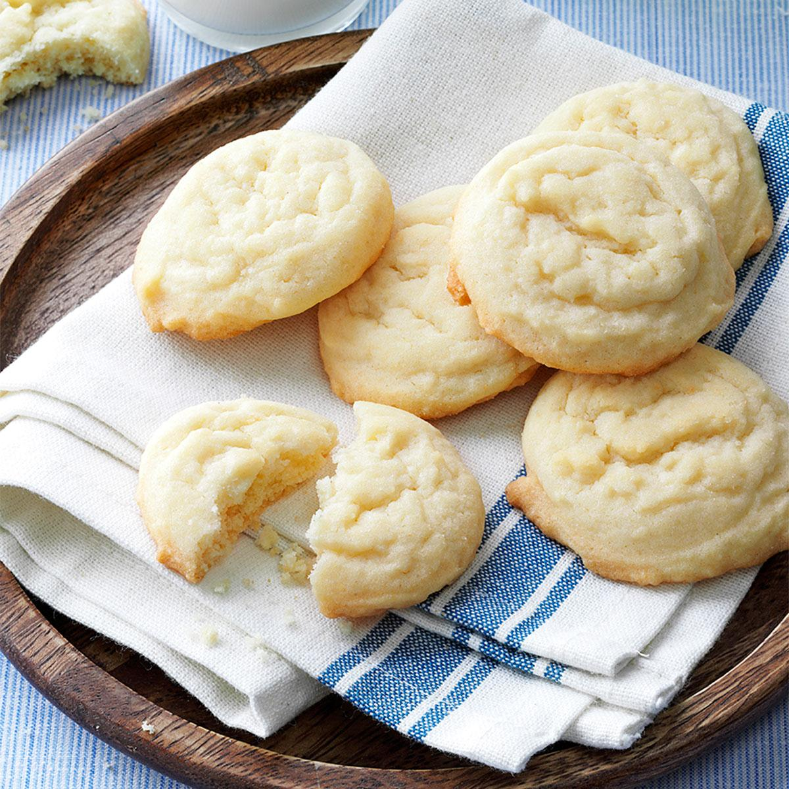

Old-Fashioned Sugar Cookies

Description
This is an amish recipe that is different that the crispy sugart topped or iced cookies you are used to. They are yellow in color and have more of a biscuit-like consistency. In fact, my brother-in-law often calls them "cakies".
Ingredients
- 4 cups sugar
- 2 cups butter flavored Crisco
- 2 cups milk
- 5 large eggs
- 2 tablespoons vanilla
- 5 teaspoons baking powder
- 1 teaspoon salt
- 1 teaspoon soda
- 9 1/2 cups flour
Steps
- Preheat oven to 400 degrees fahrenheit
- Combine flour, baking soda, salt, and baking powder and mix
- In a separate bowl, combine butter and sugar beat until creamed
- Stir the milk, eggs, and vanilla into the creamed sugar
- Gradually stir the dry ingredients into the wet ingredients
- Drop dough on an ungreased cookie sheet--1/4 cup drops at least 2 inches apart
- Cook 10-12 minutes